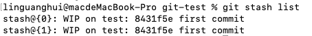
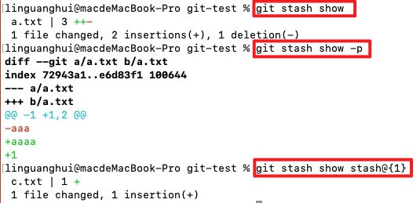

说说你对git stash 的理解？应用场景？
参考答案
一、是什么
stash，译为存放，在 git 中，可以理解为保存当前工作进度，会把暂存区和工作区的改动进行保存，这些修改会保存在一个栈上
后续你可以在任何时候任何分支重新将某次的修改推出来，重新应用这些更改的代码
默认情况下，git stash会缓存下列状态的文件：
- 添加到暂存区的修改（staged changes）
- Git跟踪的但并未添加到暂存区的修改（unstaged changes）
但以下状态的文件不会缓存：
- 在工作目录中新的文件（untracked files）
- 被忽略的文件（ignored files）
如果想要上述的文件都被缓存，可以使用-u或者--include-untracked可以工作目录新的文件，使用-a或者--all命令可以当前目录下的所有修改
二、如何使用
关于git stash常见的命令如下：
- git stash
- git stash save
- git stash list
- git stash pop
- git stash apply
- git stash show
- git stash drop
- git stash clear
git stash
保存当前工作进度，会把暂存区和工作区的改动保存起来
git stash save
git stash save可以用于存储修改.并且将git的工作状态切回到HEAD也就是上一次合法提交上
如果给定具体的文件路径,git stash只会处理路径下的文件.其他的文件不会被存储，其存在一些参数：
- --keep-index 或者 -k 只会存储为加入 git 管理的文件
- --include-untracked 为追踪的文件也会被缓存,当前的工作空间会被恢复为完全清空的状态
- -a 或者 --all 命令可以当前目录下的所有修改，包括被 git 忽略的文件
git stash list
显示保存进度的列表。也就意味着，git stash命令可以多次执行，当多次使用git stash命令后，栈里会充满未提交的代码，如下：

其中，stash@{0}、stash@{1}就是当前stash的名称
git stash pop
git stash pop 从栈中读取最近一次保存的内容，也就是栈顶的stash会恢复到工作区
也可以通过 git stash pop + stash名字执行恢复哪个stash恢复到当前目录
如果从stash中恢复的内容和当前目录中的内容发生了冲突，则需要手动修复冲突或者创建新的分支来解决冲突
git stash apply
将堆栈中的内容应用到当前目录，不同于git stash pop，该命令不会将内容从堆栈中删除
也就说该命令能够将堆栈的内容多次应用到工作目录中，适应于多个分支的情况
同样，可以通过git stash apply + stash名字执行恢复哪个stash恢复到当前目录
git stash show
查看堆栈中最新保存的stash和当前目录的差异
通过使用git stash show -p查看详细的不同
通过使用git stash show stash@{1}查看指定的stash和当前目录差异

git stash drop
git stash drop + stash名称表示从堆栈中移除某个指定的stash
git stash clear
删除所有存储的进度
三、应用场景
当你在项目的一部分上已经工作一段时间后，所有东西都进入了混乱的状态， 而这时你想要切换到另一个分支或者拉下远端的代码去做一点别的事情
但是你创建一次未完成的代码的commit提交，这时候就可以使用git stash
例如以下场景：
当你的开发进行到一半,但是代码还不想进行提交 ,然后需要同步去关联远端代码时.如果你本地的代码和远端代码没有冲突时,可以直接通过git pull解决
但是如果可能发生冲突怎么办.直接git pull会拒绝覆盖当前的修改，这时候就可以依次使用下述的命令：
- git stash
- git pull
- git stash pop
或者当你开发到一半，现在要修改别的分支问题的时候，你也可以使用git stash缓存当前区域的代码
- git stash：保存开发到一半的代码
- git commit -m '修改问题'
- git stash pop：将代码追加到最新的提交之后